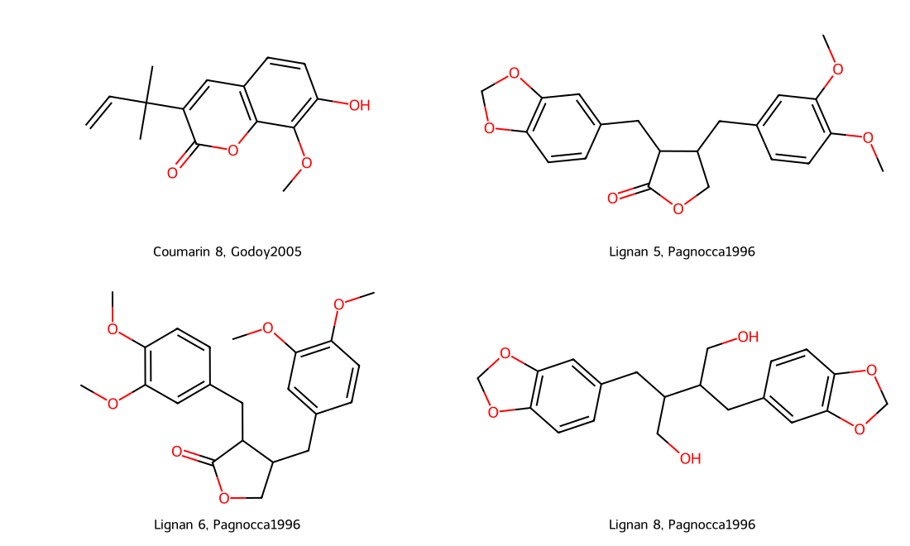

Attine antifungal project · Computational source recovery · 12 September 2026
What the published dose-response curves support
Inspect recovered points, descriptive fits and their sensitivity. Each result retains its source material, exposure route and concentration unit.
36digitized markers
8material/exposure series
50Howard plant records
4source-derived graphs
These fits describe a published figure. They do not predict new compounds or garden efficacy. Pixel sensitivity is not a biological confidence interval. Two curve shapes fit the same eight series; they are not sixteen independent experiments.
Recovered markerProbit refitLogistic refitDashed vertical line: published IC50
| Curve | Descriptive C50 | Pixel sensitivity range | One-marker omission range | Fit error |
|---|
Both models fix asymptotes at 0 and 100%. Sensitivity ranges are from 200 coordinate perturbations, not exhaustive bounds or confidence limits. Omission refits are withheld when remaining points no longer bracket 50%. Curves are drawn only over observed doses.
Download points · Download fits · Exportable chart · Marker audit overlay
Why dillapiole has no new curve fit
Salazar's overlapping circles hide replicate counts. We retained 14 visible dose envelopes for the extract and dillapiole without inventing means. Dillapiole's plotted responses cross 50% between 25 and 50 ppm, consistent with the published 38 ppm. Recovering hidden replicate values requires better data, not another copy of the same PDF.
Visible envelopes · Original Figure 3
Plant selection: chemical deterrence is a discovery signal
Howard's supplement contains 148 monthly harvest means for 50 plants. These observations concern ants; they provide no direct fungal inhibition measurement. Class 1 deterrence is not statistically significant in the source.
| Plant, source spelling | Extract class | Mean harvested disks/hour across recorded months | Source and scope |
|---|
Plant table · Monthly means and SDs · Source definitions
Chemical connectivity recovered from source figures
Coumarin 8 and lignans 5, 6 and 8 now have explicit connectivity graphs. The three lignan graphs leave stereochemistry unassigned. These supplementary records do not replace the registry's exact-identity flags.

SMILES and source links · Newly recovered Portuguese isolation paper
The earlier isolation paper has a numbering conflict between its abstract and scheme. Historical compound codes must be matched by full structure and provenance before exact stereochemistry can be assigned.